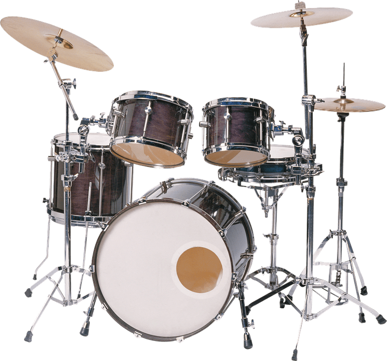

BIENVENIDOS A NUESTRA PÁGINA WEB
El corazón del hombre es un instrumento musical, contiene una música grandiosa. Dormida, pero está allí, esperando el momento apropiado para ser interpretada, expresada, cantada, danzada. Y es a través del amor que el momento llega. "Masnavi" (1258), Rumi
Lo último de nuestro blog

Cada instrumento se toca con amor
Siente la sensación de crear música nueva
Cada instrumento tiene muchas posibilidades, quizás infinitas... depende de nuestra dedicación, práctica y tiempo físico.

Guitarra
Violín
Piano eléctrico
Trompeta
